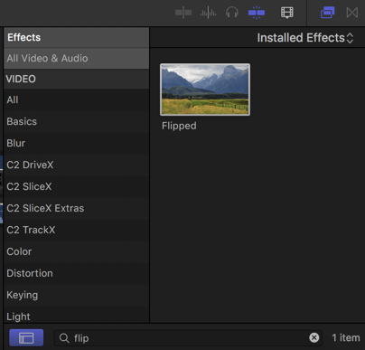
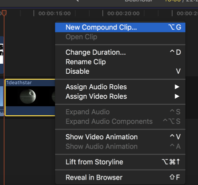
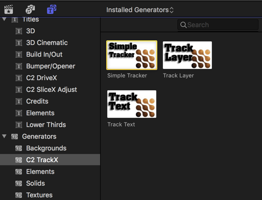
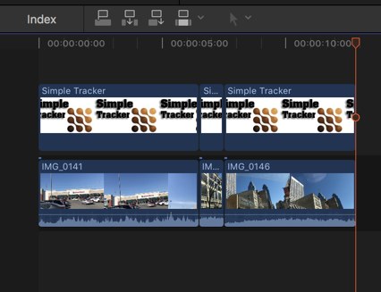
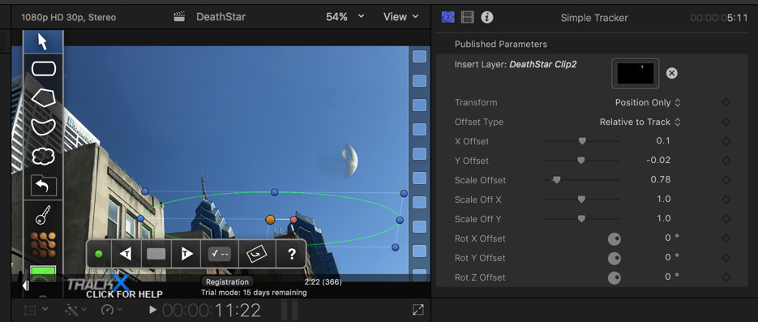

Putting a Space Station Over Philly With Final Cut Pro
Quick overview
- If interested in creating special effects for film projects.
- Uses Final Cut Pro X and CoreMelt’s TrackX Plugin’s Simple Tracker.
- In about thirty minutes you can create a passable video that portrays the Star War’s Death Star over Philadelphia, PA USA.
- Resulting video:
Gathering the Software
I’ll begin with an apology that the software discussed here requires Apple Mac* hardware to run. What we do here can be done with Adobe Premier Pro right out of the box.
Assuming you have a Mac* device, this project also requires Final Cut Pro. This is not cheap software, but I’ve found it to be worth it if you plan to be doing enough projects. I have many nieces and nephews and we’ve had an awesome time making movies with this tool.
Using Keyframing, we could get a realistic tracking effect, but this would be a very tedious and time consuming way to proceed. Fortunately there is a plugin we can use that does the tracking nearly automatically.
Coremelt’s TrackX Plugin powered by Mocha analyzes your video frame by frame and attempts to match the motion of the camera. The user needs only provide some very simple guidance.
Gathering the Media
A quick image search will yield a wide range of choices for images of a space station, in this case the Death Star, but keep an eye towards an example that would look realistic in the context of your video. I chose an image that looked a lot like what the moon looks like in the daytime.
I also filmed a couple of scenes around Philadelphia, being careful to move the camera enough to make it seem realistic, but smoothly enough with no quick motions to make tracking easier for myself.
Preparing the Death Star image
When you apply the image, however, you also must keep in mind that if it doesn’t match the shadowing seen in the video, the viewer’s mind will feel a bit off about it. Look for the shadows in your video and flip the Death Star image to match that direction using the flipped effect:

That is, import the media, drag it down to your timeline, and then drag the flipped effect to the corresponding timeline entry of the Death Star image. Next right click on that clip and create a new compound clip:

This is required for the TrackX plugin. Once you’ve done that, the compound clip of the Death Star will show up in your media and you can delete from your time line.
Because I had one scene facing West and another facing East, which is not recommended because that would imply two Death Stars in the sky, I needed to create two compound clips, one flipped from the other, in order to match the sun direction.
Tracking your video clips
Next we can start the tracking process. Import your video clips from your device or hard-drive and then drag the corresponding file from the media section onto the timeline.
Then, go to the generators menu and select Simple Tracker under the C2 TrackX entry:

Drag that on top of the video clip. Your timeline will look something like this:

Above, I have three video clips and I have trimmed the Simple Tracker to fit each one and thus have three Simple Tracker entries in the timeline, one for each video.
Click on the Simple Tracker entry on the timeline and you’ll now be able to set up tracking for your video:

Figuring out what shape and placement for your area selection in Simple Tracker is an art more or less. Be sure to select an area that is completely in view for the majority of the clip. In the above screenshot, I chose the top of two sky-scrapers that are clearly and consistently within view during the entire clip. This helps the tracker maintain a passable tracking.
Drag your compound clip of the Death Star that you made in the previous step over to the Insert Layer section, and then adjust the X, Y offsets and scale until the image placement in your video looks satisfactory.
In the timeline, move to the start of the video, and after you set your tracking shape selection, click on the Track forward button (white sideways arrow with the T in it). The plugin will iterate through each frame attempting to track the camera location in such a way that it can superimpose an image of the Death Star on the sky so that it appears as if it is stationary relative to the camera. In the resulting video (above) you can see, if you look closely enough, some flaws, but for the relatively small time put into it, the effect is quite good.
Tutorial Video
Finally, here is a quick how-to video walking you through the process in real-time: